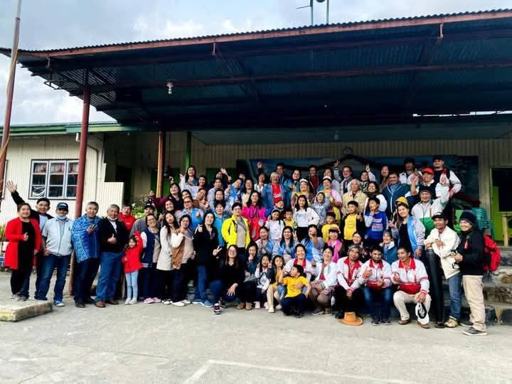

First Milestone: Elementary Graduation at Loo Elementary School
The first major academic achievement marked by small hands holding diplomas at Loo Elementary School on April 2016. The ceremony celebrated six years of foundational learning, from mastering basic literacy to developing problem-solving skills.
The graduation program featured traditional elements including the processional march, valedictory address, and distribution of diplomas. Students wore their formal uniforms with pride as they received recognition for their accomplishments.
Notable aspects of the elementary journey included:
- Developing fundamental reading, writing, and arithmetic skills
- Participating in school-wide events and competitions
- Forming lasting friendships with classmates
- Learning under the guidance of dedicated teachers
This graduation marked an important transition point as students prepared to enter junior high school, carrying with them the knowledge and values instilled during their elementary years.